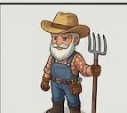
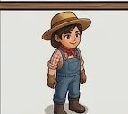
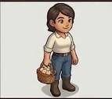

🎥 Mode Kamera: Birds-Eye Overview
🐔
Tutorial
Pelajari alur siklus bisnis, perawatan ternak, mesin pabrik, ekspedisi armada, dan tips cuan maksimal!
Hewan ternak Anda secara otomatis menghasilkan bahan mentah di area kandangnya (Ayam ➔ 🥚 Telur setiap 5 detik, Sapi ➔ 🥛 Susu setiap 8 detik, Domba ➔ 🧶 Wol setiap 11 detik). Cukup berjalan mendekat; fitur Harvest Magnet otomatis menarik panen masuk ke ransel Anda.
Jangan langsung menjual bahan mentah! Bawa hasil panen ke mesin pabrik di halaman tengah. Berdiri di lingkaran emas SETOR di depan mesin untuk memprosesnya hanya dalam 3 detik. Ambil hasilnya di lingkaran toska AMBIL. Mayones, Keju, dan Kain memberikan margin keuntungan +300% hingga +370%!
Bawa produk bernilai tinggi ke area Garasi Pengantaran (Delivery Garage) di samping kanan Silo. Berdiri di lingkaran emas MUAT TRUK di samping driveway, atau buka menu Ransel di pojok atas lalu klik tombol "Muat ke Armada".
Berdiri di lingkaran toska KIRIM TRUK di mulut jalan garasi, atau cukup tekan tombol Spasi di keyboard dari mana saja! Kendaraan melaju keluar garasi, menyusuri jalan raya aspal ke ujung peta utara, berhenti selama 5 detik untuk bongkar muatan di kota, lalu berputar balik dan kembali masuk ke garasi.
Begitu armada tiba kembali di garasi, gelontoran uang tunai langsung masuk ke saldo Anda disertai efek koin emas. Gunakan uang tersebut untuk upgrade kapasitas ransel, percepat mesin pabrik, buka kandang sapi & domba, serta upgrade armada ke tingkat kendaraan yang lebih kencang!
Kandang ayam sudah terbuka sejak awal permainan. Dilengkapi sistem Rumah Ayam Panggung (Elevated Chicken Coop) dengan kapasitas 4 ekor per rumah dan berkembang otomatis:
Posisi Alami 4 Ayam per Rumah: Ayam 1 mengerami telur di kotak sarang samping (nesting box), Ayam 2 bersiap di tangga kayu (ramp), Ayam 3 mematuk tanah di bawah kolong panggung, dan Ayam 4 mencari makan di depan keset kain 'EGGS'.
Paddock luas di sebelah depan kandang ayam. Menampung hingga 8 ekor sapi perah. Sapi berkumpul secara alami di tempat makan kayu panjang (Feeding Trough) untuk mengunyah rumput hijau segar dan menghasilkan susu murni.
Padang rumput berpagar putih di sisi utara peternakan. Menampung hingga 8 ekor domba berbulu tebal. Domba mengunyah jerami kering di palung pakan dan menghasilkan wol berkualitas tinggi yang bernilai ekonomi tinggi.
| Bahan Mentah | Mesin Pengolah | Produk Jadi Olahan | Harga Jual | Keuntungan |
|---|---|---|---|---|
| 🥚 Telur (Rp 5) | 🥫 Mayones Vat (3s) | 🥫 Mayones Kemasan | Rp 20 | +300% |
| 🥛 Susu (Rp 10) | 🧀 Cheese Press (3s) | 🧀 Keju Batang Murni | Rp 45 | +350% |
| 🧶 Wol (Rp 18) | 🧵 Loom Weaver (3s) | 🧵 Benang / Kain Tenun | Rp 85 | +370% |
Setiap mesin pabrik industri di halaman peternakan dilengkapi dua lingkaran penanda denyut interaktif:
Berdiri di depan corong mesin untuk memasukkan bahan mentah dari ransel ke antrean mesin secara otomatis.
Berdiri di samping mesin untuk mengambil produk olahan yang sudah selesai diproses langsung ke dalam ransel.
Bangunan Garasi Pengantaran (Delivery Garage) berdiri tegak lurus di sebelah kanan Silo (x = 6.0, z = -12.5). Dilengkapi gerbang terbuka bertuliskan "PENGANTARAN / DELIVERY" yang menghadap langsung ke jalan raya timur melalui jalur akses aspal driveway.
Saat tidak sedang mengantar, kendaraan standby terparkir rapi di dalam garasi di atas lantai beton dengan penerangan lampu plafon. Di samping garasi terdapat area kargo berpagar kayu yang menampung tumpukan peti dan drum pasokan.
| Level & Kendaraan | Kapasitas | Bonus Harga | Durasi Perjalanan | Biaya Upgrade |
|---|---|---|---|---|
| 🚲 Lv 1: Sepeda Onthel | 6 Item | 1.00x | 45s (20s + 5s + 20s) | Starter Gratis |
| 🛵 Lv 2: Motor Gerobak | 12 Item | 1.25x (+25%) | 31s (13s + 5s + 13s) | Rp 120 |
| 🛺 Lv 3: Niaga Roda Tiga | 20 Item | 1.55x (+55%) | 23s (9s + 5s + 9s) | Rp 280 |
| 🛻 Lv 4: Pikap Serbaguna | 32 Item | 1.90x (+90%) | 17s (6s + 5s + 6s) | Rp 600 |
| 🚚 Lv 5: Truk Sedang Kayu | 48 Item | 2.35x (+135%) | 13s (4s + 5s + 4s) | Rp 1.250 |
| 🚛 Lv 6: Kontainer Ekspedisi | 75 Item | 3.20x (+220%) | 9s (2s + 5s + 2s) | Rp 2.800 |
| Tombol / Aksi | Fungsi Utama | Keterangan |
|---|---|---|
| W A S D / Panah | Gerak Karakter | Berjalan dan berlari mengelilingi seluruh penjuru peternakan. |
| E | Aksi Cepat / Interaksi | Ambil panen manual satu per satu atau interaksi cepat dengan stasiun terdekat. |
| Spasi / Tombol 🚀 | Kirim Truk Instan | Memberangkatkan armada pengantar langsung dari mana saja tanpa perlu berjalan ke garasi. |
| V atau C | Ganti Mode Kamera | Beralih mulus antara Diorama Isometrik 3D ⇄ First-Person POV 360°. |
| 🖱️ Klik Kiri di Tanah | Click-to-Move | Karakter peternak akan otomatis berjalan menuju titik lokasi tanah yang diklik. |
| 🖱️ Tarik / Drag Mouse | Tengok Kamera Bebas | Pada mode First-Person POV, gerakkan mouse untuk menoleh bebas 360 derajat. |
Ternak Anda tetap aktif berproduksi saat Anda offline!
Hasil panen offline telah siap di area kandang hewan. Kumpulkan dan olah di pabrik untuk keuntungan maksimal!


